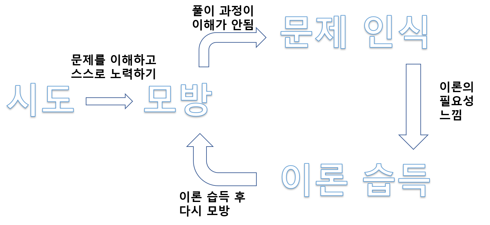
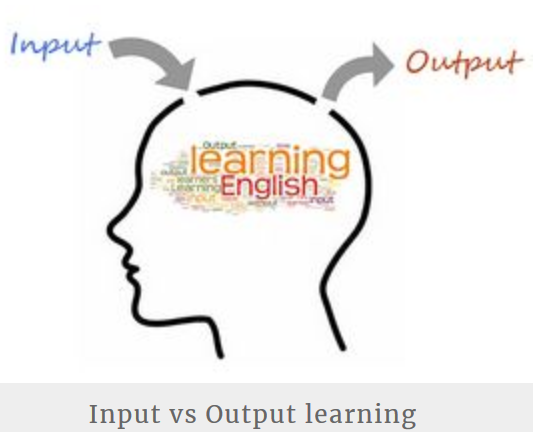
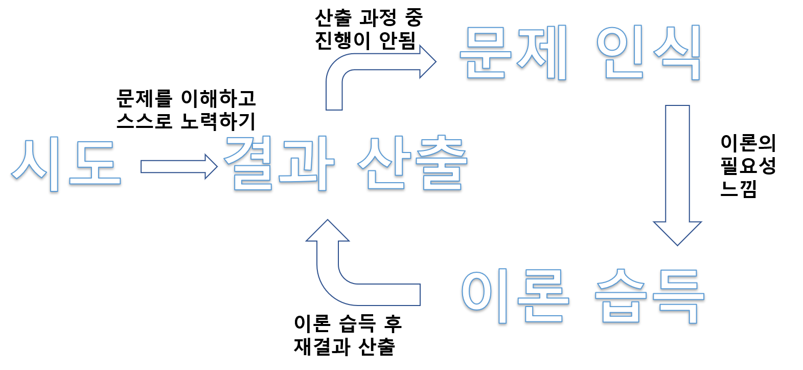
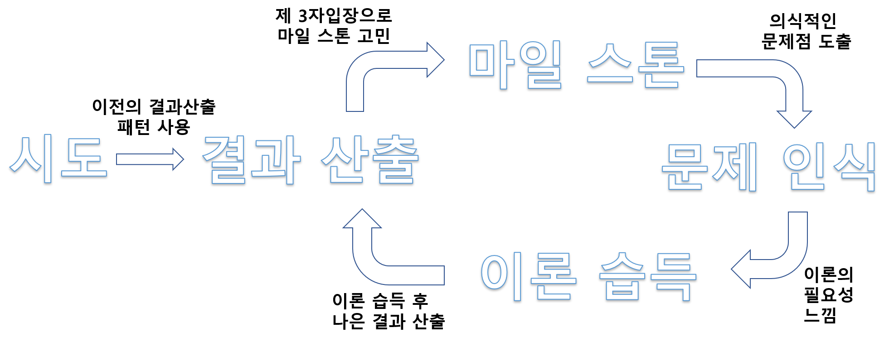

학습 그 자체를 배워야 하는 이유:
우리 컴퓨터 과학 종사자들은 이 세계에서 살아 남기 위해 항상 지식을 학습해야 합니다.
하지만, 개인적으로 살아 남기 위해서는 지식을 얻는 지식을 먼저 학습해야 한다고 생각합니다.
안타깝게도 이 분야에서 학습이란 행위 그 자체를 학습하려는 사람은 생각보다 드믑니다.
우리는 정말 배울 것이 많고 대부분 물리적인 시간의 압박을 느끼며 학습 하게됩니다.
따라서, 많은 사람들이 지식을 쫒아 학습하지 못하고, 지식에 쫒기듯이 학습을 하게 됩니다.
이 과정에서 많은 사람들이 지식에 쫒기듯이 학습을 하고 임시방편으로 현장 적용은 했지만
정작 시간이 지나고 나면 머리에는 아무 것도 남지 않았다라는 느낌을 받는 경우가 많습니다.
많은 시간과 인풋을 넣어 학습을 했지만 우리의 머리에는 아무런 아웃풋이 없다는 것 입니다.
매일 컴퓨터에 인풋(Input)을 넣고, 아웃풋(output)의 퀄리티를 내기 위해 노력하고
매일 컴퓨터의 시간 또는 메모리의 효율성을 신경쓰면서 살아가는
우리가 스스로의 학습에 관한 아웃풋의 퀄리티와 효율성에 대해서는
한번도 생각 해본 적이 없다는건 정말 어불성설(語不成說) 입니다.
이 문제의 해결책으로 구성주의를 기반으로 한 학습 매커니즘을 제시하려고 합니다.
여기서 말하는 학습 매커니즘은 절대 새로운 것은 아닙니다.
이미 많은 분들은 비슷한 학습 매커니즘을 자신도 모르게 익히고 사용하고 있을 것입니다.
단지, 여기선 매커니즘을 학습 이론들과 책등에서 개념과 근거를 차용해서 글로 옮긴 것입니다.
기존 개념 그대로 차용을 하려했지만 상당부분 개인적인 해석이 들어가 있음을 참조 바랍니다.
사용되는 학습 매커니즘의 개념과 근거들은 개인적 경험과 아래에 나온 자료에서 얻었습니다.
- 발견 학습이론 (J.bruner) - 교육학 이론
- 인지적 도제 학습이론 (Collins) - 교육학 이론
- 1만 시간의 재발견(말콤 글래드웰) - 자기 계발서
- Input-Output learning - 언어 학습 이론
- 앤서니 웰링턴의 의식 4단계 - 음악 관련 유명한 인터뷰
구성주의은 여기에서 가장 중요한 이론으로 대부분은 이 이론을 전제로 두고 진행 합니다.
-참조 구성주의 자세하게 알아보기
이론 학습보단 먼저 시도하라:
요리를 해보지 않은 사람으로부터 “어떻게 하면 요리를 잘 할 수 있을까요?” 라는 질문이 오면
어떤 요리사도 요리 이론부터 다 공부하고 요리를 시작하라고 하지 않을겁니다.
축구를 해보지 않은 사람으로부터 “어떻게 하면 축구를 잘 할 수 있을까요?” 라는 질문이 오면
어떤 축구 선수도 축구 이론부터 다 공부하고 축구를 시작하라고 하지 않을겁니다.
그들은 “무조건 어설프더라도 직접 요리를 만들어보고, 공을 차봐야 한다.” 라고 이야기 합니다.
프로가 아닌 우리들도 ‘당연히.. 그런 건 이론 보다는 직접 해봐야지’ 라는 생각을 할 것 입니다.
근데, 이상하게도, 학문 분야에 오면 우리의 생각은 조금 달라집니다.
많은 사람이 응용 단계 전에 수학 개념을 이해하려고, 온존일 개념 강의만 들으며 학습합니다.
많은 사람이 응용 단계 전에 알고리즘 개념을 이해하려고, 온종일 교재로만 학습합니다.
학문에선 사람들이 실체적인 것보다는 이론을 완전히 익히고 실전으로 가려는 오류를 합니다.
혹자는 학문이랑 운동이랑 배우는 게 같나요? 또는 학문이랑 요리랑 배우는 게 같나요? 라고
질문할 수 도 있습니다. 하지만, 저는 오히려 무엇이 다른가요? 라는 반문을 하고 싶습니다.
당연히, 학문은 고도화 된 부분이 많고, 단계적인 지식 없이 이해하기 힘든 부분도 많습니다.
또한, 타 분야와 다르게 학문 분야는 신체 관련영역의 개입이 적고 뇌를 쓰는 비율이 높습니다.
그러나, 우리 몸에서 학습이 이루어지는 장소는 분야에 상관 없이 뇌 하나 뿐입니다
결국 뇌가 학습하는 매커니즘은 요리든 운동이든, 운전이든 학문이든 큰 차이가 없습니다.
인간의 지성사를 봐도 실체의 것을 뇌에서 구상화(형상화)로 이해한 후에 추상화가 따라옵니다.
구성주의에서는 이러한 점을 꼭 집어 학습법에 대한 새로운 패러다임을 제시합니다.
인간은 실제적인 문제를 맞닥뜨리고, 문제를 해결하는 과정에서 학습의 필요를 느끼고
자발적 학습으로 여러 정보를 찾고, 모으고 실제로 검증 하며 스스로 원리를 발견한다.
라고 인간 학습에 대해 규정했고, 학문 또한 이렇게 학습을 하여야 한다고 주장했습니다.
따라서, 그 학습법은 실전중심 학습, 과제중심 학습이 될 수 밖에 없음을 역설했습니다.
컴퓨터과학에 응용해보면, 이론을 먼저 접하는 것보다는 밑의 방법들을 시도하는 게 좋습니다.
- 알고리즘, 자료구조 경우: 일단 문제를 보고 문제에만 집중해서 해결해보려고 시도한다.
- 전문 분야의 경우: 일단 다른 사람이 구현한 코드를 보고 혼자 해석하려고 시도한다.
- 개발의 경우: 일단 자기가 아는 방법을 써서 코드로 구현을 해보려고 시도한다.
위 과정에서 우리는 이 시간들이 답답하고, 고통스럽고, 의미없게 느껴질 것입니다. 하지만,
이를 통해야만 우리는 학습의 필요를 느끼고, 어떻게 학습해야 하는 지 이해할 수 있습니다.
이 과정을 절실히 겪고 이론을 접할 때, 우리는 비로소 스스로 원리를 발견할 수 있습니다.
스스로 지식의 단계 판단하기:
효율적인 학습법을 위해선 현재 자신의 지식의 단계를 판단하는 게 중요합니다.
개인적으로 지식의 단계로는 설명과 함께 네 가지 정도로 나눌 수 있습니다.
-참조 웰링턴의 의식 4단계 요약
-
지식의 기본도 모르는 단계:
이 분야 지식에 대해서 배경지식이 거의 없는 상태이고, 시작조차 두려운 단계 -
지식을 연습하고 연마하고 있는 단계:
이 분야에 대한 배경지식은 어느 정도 있지만, 지식의 부족함을 많이 느끼는 단계 -
지식이 몸에 익어 자유로운 단계:
지식에 대한 근거 있는 자신감이 생기고, 언뜻 봐서는 만족할만한 퍼포먼스를 보이는 단계 -
지식이 완전히 체내화 되버린 단계:
이 분야에서의 지식을 거의 완벽히 알고, 남이 봐도 거의 완벽하다고 느끼는 단계
단계별 학습 적용:
구성주의자들은 인간의 지식 학습은 가지고 있던 지식에서 확장되어 일어난다고 하였습니다.
현재 가진 지식의 단계에 맞게 학습법을 적용해야 효율적으로 지식을 확장 할 수 있게 됩니다.
1. 지식의 기본도 모르는 단계
이 단계에서 대부분 사람들은 자기 자신이 무엇이 부족한지도 잘 모르는 경우가 많습니다.
무엇을 해야하는 지조차 모르니 책이나 강의를 통한 기초이론 공부부터 시작하려고 합니다.
앞에서 언급 했듯, 이론 공부부터 들어가는 게 효율적인 학습방법이라고 생각하지 않습니다.
이 단계의 학습법으로는 인지적 도제학습법을 추천합니다.
인지적 도제학습법이란 한 제자가 직접 도자기 장인에게 도자기를 만드는 기술을
배우는 것처럼 학습하는 것을 말합니다. 기존의 학습 과정은 다음과 같습니다.
- 도자기 장인이 제자 앞에서 자신이 도자기를 만드는 시범을 보여줍니다.
- 제자는 도자기 장인이 만드는 방법을 관찰하고 모방하여 스스로 도자기를 만듭니다
- 제자가 만드는 과정에서 장인이 제자의 기술에서 부족한 점을 말해 줍니다.
- 제자는 부족한 점을 듣고 스스로 문제를 인식하고 학습 의욕을 얻습니다.
- 이 때, 장인은 각 문제점의 해결법과 해결법에서 사용되는 원리를 가르쳐 줍니다.
- 제자는 장인으로부터 해결법에 관한 정보를 얻고 스스로 원리를 꺠우치게 됩니다.
이는 “시범 -> 모방 -> 코칭 -> 문제 인식 -> 이론 습득 -> 학습” 의 매커니즘입니다
우리 상황에 맞는 자기주도 학습으로 적용하면 다음과 같습니다.
- 우리가 해결해야 하는 문제를 먼저 파악하고 스스로 문제를 풀려고 시도합니다.
- 전문가의 결과물을 찾고 그것을 모방하며 의식적인 관찰을 합니다.
- 의식적인 관찰에서 이해가 안되는 것을 찾고 스스로 이론 또는 역량 부족을 인식합니다.
- 이해가 안되는 부분의 이론을 찾고 고민함으로서 원리를 꺠우치게 됩니다.
- 이론 습득 후 다시 모방하는 과정을 통해서 다른 문제점을 인식합니다.
이 때 주의 해야할 점은 전문가의 결과물을 모방을 할 때, 생각없이 모방을 하는 게 아니라
전문가는 왜 이런 식으로 하는 지를 계속 의문을 갖고 스스로 고민을 해야 합니다
위처럼 학습을 해야 우리가 이 이론이 왜 필요한지 직접 느낄 수 있어 학습 의욕이 올라가고
실제로 전문가들은 어떻게 문제를 해결하는 지의 청사진을 뇌 전체로 이해할 수 있게 됩니다.
아래는 일련의 과정을 간단하게 도식화 한 것 입니다.

2. 지식을 연습하고 연마하고 있는 단계:
이 단계에서의 대부분은 이 분야에 관한 지식의 부족함을 스스로가 잘 이해하고 있습니다.
앞의 단계와는 조금은 다른 이유로 이론 학습에만 많은 시간을 투자하는 경향이 있습니다.
안타깝게도, 추상적으로 아는 것과 실제로 결과물을 산출하는 것은 생각보다 괴리가 있습니다.
또한, 이론을 배우는 추상적인 학습만을 하게되면, 후에 시간이 지나 막상 산출단계에서는
배웠던 이론들은 이미 뇌에서 잊혀져 다시 이론책을 펴고 학습을 할 수 밖에 없게됩니다.
따라서 이론 학습에만 많은 시간을 쓰는 것은 비효율적인 학습법입니다.
이 단계에서는 인풋-아웃풋 학습법을 추천합니다.
본래 인풋-아웃풋 학습은 외국어 학습에서 많이 쓰이는 학습법으로 말하기-쓰기 영역(Output)
읽기-듣기 영역(Input)을 번갈아 훈련을 해야 외국어를 제대로 할 수 있게 된다는 학습입니다.

우리는 이 학습법을 결과산출-이론학습의 순차 학습으로 볼 수 있고 아래는 적용한 것입니다.
- 우리가 해결해야 하는 문제를 먼저 파악하고 스스로 문제를 풀려고 시도합니다.
- 전문가의 결과물을 최대한 보지 말고, 스스로 결과물을 산출하려고 노력합니다.
- 결과물을 산출하는 과정에서 더 나아가지 못하는 부분을 찾고 이론 부족을 인식합니다.
- 나아가지 못한 부분의 이론을 찾고 응용을 고민함으로서 원리를 꺠우치게 됩니다.
- 이론 습득 후 다시 결과물을 산출하는 과정을 통해서 다른 문제점을 인식합니다.
아래는 일련의 과정을 간단히 도식화 한 것입니다.

3. 지식이 몸에 익어 자유로운 단계:
이 단계는 준-전문가에서 전문가로 가는 구간입니다.
현직에 계신 분들은 상당 수가 이 단계에 있을 것입니다. 앞의 두 단계와 달리
이 단계에선 학습을 했음에도 퍼포먼스의 발전이 단시간에 느껴지지 않습니다.
따라서, 많은 사람들이 학습에 시간을 투자하지 않고 현상 유지 하는 경향이 있습니다.
여기서는 이전 두 단계의 오류와는 반대로 결과물 산출만을 하는 경우가 많습니다.
더 이상 배우지 않고 이전에 성공했던 결과물 산출 패턴을 계속 사용하는 것 입니다.
이 단계에서는 “1만 시간의 재발견” 에서 제시한 의식적인 학습을 추천합니다.
이 학습법은 이전보다는 더 높은 수준의 메타인지능력을 요구합니다.
높은 수준의 메타인지를 활용하기 위한 방안으로 마일스톤이란 지표를 활용합니다.
마일스톤이란 팀 프로젝트에서 어떤 부서에서 어떤 작업이 어느 정도 진행 되었는지를 내부
또는 외부에 알려주기 위한 지표입니다. 이 지표를 개인의 학습 영역에 적용 할 수 있습니다.
우리가 학습할 때 좋은 마일스톤은 3가지 조건을 갖추어야 합니다.
- 전체적인 퍼포먼스를 올리는 데 필요한 것인가?
- 이것의 발전은 측정 가능한가?
- 측정할 대상과 비교 대상이 구체적인가?
마일스톤의 한 예를 들어보겠습니다. 이 함수의 구현 시간을 이전보다 줄일 수 있는가?
은 아래와 같은 이유로 Time 관련 좋은 마일스톤이라고 할 수 있습니다.
- 구현 시간 단축은 우리의 코드 구현 퍼포먼스를 올리는 데 충분히 필요합니다.
- 구현에 걸린 시간은 시간 타이머 등의 장치로 측정이 가능합니다.
- 측정할 대상인 함수라는 대상과 이전에 구현한 시간이라는 비교 대상이 구체적입니다.
다시 의식적인 학습의 내용으로 돌아가면
기본적인 틀은 인풋-아웃풋 학습과 같지만 마일스톤이 있다는 것이 핵심입니다.
이전 단계까지의 자신의 문제점이 결과물 산출 과정에서 자연스럽게 인식이 됩니다.
하지만 이 단계부터는 자신의 결과물이 표면상으로는 아무 문제가 없는 것처럼 보입니다.
따라서 마일스톤을 활용해 의식적으로 문제점을 도출시켜야 우리가 인식할 수 있습니다.
일련의 과정은 아래와 같습니다.
- 우리가 해결해야 하는 문제를 파악하고 결과를 산출합니다.
- 결과물에 관련해서 제3자의 입장이 되어서 마일스톤을 고민해보고 만듭니다.
- 자신이 만든 결과물에 마일스톤을 적용해서 결과물에서의 문제점을 발견합니다.
- 문제점 해결에 필요한 이론을 찾고 응용을 고민함으로서 원리를 꺠우치게 됩니다.
- 이론 습득 후 다시 결과물을 산출하는 과정을 통해서 좀 더 나은 결과물을 만듭니다.
위 과정을 간단히 도식으로 나타낸 것입니다.

4. 지식이 완전히 체내화 되버린 상태:
개인적으로 이 단계까지 간 사람은 극소수의 전문가일 것이라고 생각합니다.
정확하게 어떤 학습법이 좋을 지는 모르지만 추측을 하자면 아래와 같습니다.
- 다른 분야에서 아이디어를 가져와서 이전에 없던 것을 만드는 융합적 사고 학습
- 다른 전문가와 교류를 통해 서로의 피드백을 해주며 성장하는 학습
※ 위 학습 패러다임을 더 깊이 이해하려면 지식과 메타인지를 참조
※ 전체적인 학습 설계를 계획하는 건 학습 설계을 참조